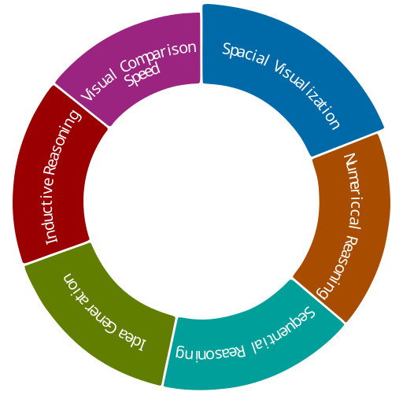
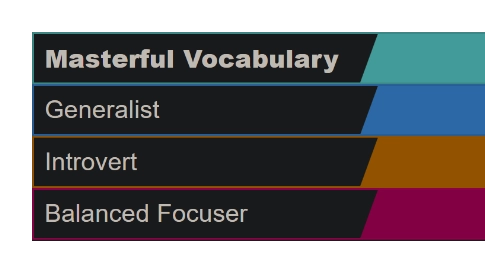

Realistic
You're most interested in work that is practical and hands-on with tangible results.


You're most interested in work that is practical and hands-on with tangible results.
You're most interested in work that is creative and original.
You're most interested in work that is practical and detail-oriented.
Your Ikigai is the independent creation of immersive digital experiences and visual craft—building evocative, structurally sound video games and designs that champion moral courage, celebrate human decency, and solve complex technical puzzles on your own terms.
Your YouScience profile and reflections clearly show that you are an autonomous technical builder, not a middle-manager, committee facilitator, or classroom instructor. You possess the comprehensive skill set needed to carry a project across multiple disciplines without needing an army of specialists.
I enjoy making video games and watching interesting videos on YouTube.
I would wake up at 6am, go to the gym, pick up coffee on my way home, shower, work on a game-dev project, eat and watch a movie with my fiancée, and go to bed.
I enjoy scary stories and appreciate people that aren't afraid to stand up for what they know is right—no matter how small a matter, or how costly it is to say "no."
I want to visit another country.
People generally ask me to help with small construction projects and computer-related tasks such as graphic design work.
I published my first video game on the Google Play Store.
Most things computer-related come pretty easily to me.
Yes. I tried to teach someone how to use Photoshop, and it was a nightmare. I am a very bad teacher.
I feel the need to feed the hungry.
I want to see no war and a government that prioritizes its own people and land.
I feel a great pull to encourage nice people, and let them know that their kindness is valued.
I wish more people treated others as they would like to be treated.
Game Developer and Graphic Designer.
Game Developer and Graphic Designer.
Technology and Art.
My own thing.
Brainstormer.
Diagnostic Problem Solver.
Numerical Detective.
Sequential Thinker.
3D Visualizer.
Visual Scanner.
Balanced Focuser.
Masterful.
Generalist.
Introvert.
Realistic, Artistic, and Conventional.